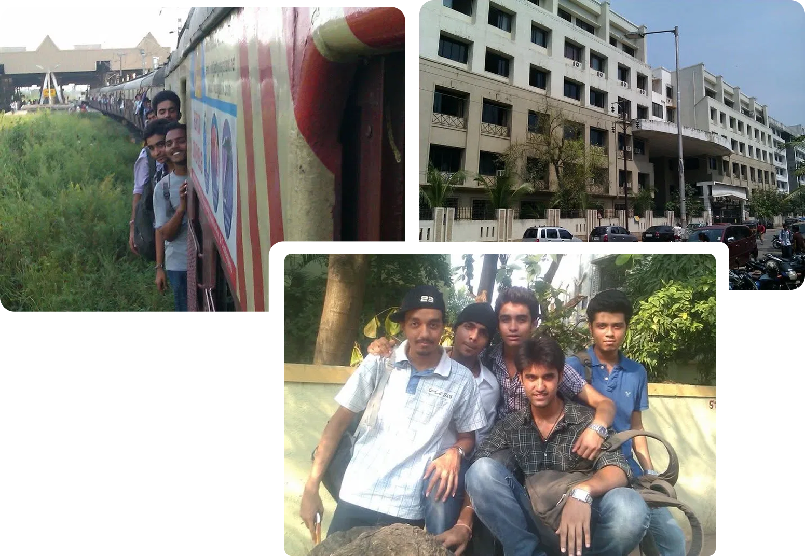
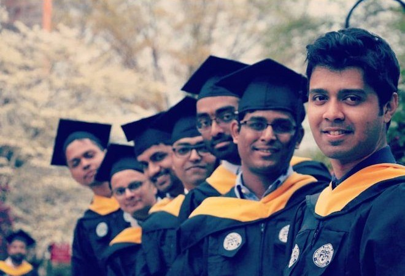
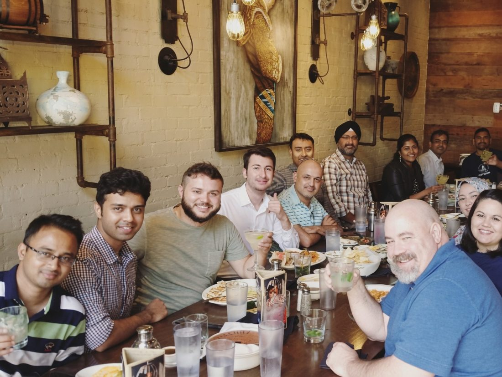
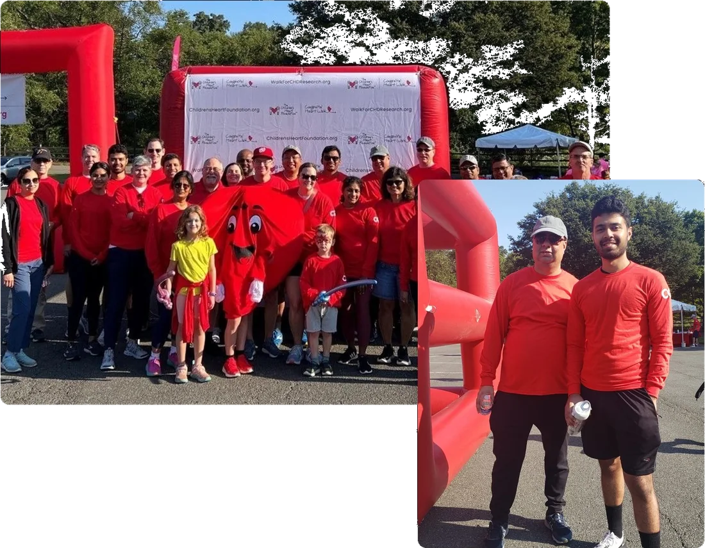
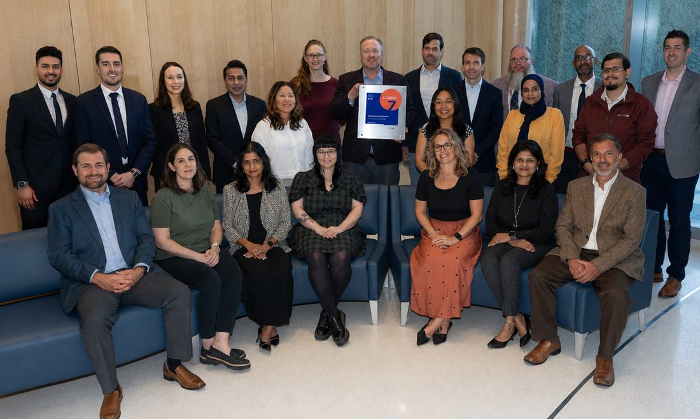

From developer to designer.
Less a timeline, more a throughline: the turns that shaped how I work, and where the work matters most.

B.S. in Computer Engineering
Where I learned to think in systems.
I started out in engineering in Mumbai, learning to see software as structure, not just screens. The more I built, the more I caught myself redrawing the interfaces in my head, imagining how they could be clearer for the person on the other side. That pull toward people, not code, is what moved me toward design.

M.S. Interactive Media & Game Development
Trading code for the people using it.
I came to the US for a master's in human-computer interaction, and it reframed how I saw everything. For my thesis I built a VR driving simulator, then handed it to a room of testers and let how they actually behaved, not my assumptions, guide the redesign. That is when designing around real people went from a method to a habit.

Senior UX/UI Designer
My first team, and the one I learned the most from.
Softrams was my first design job after grad school, and where I learned how to really work with a team. I was the only designer on a federal healthcare platform, so I figured it out side by side with engineers and analysts, usually over long lunches like this one. The work was serious, but the people are what I remember.

Senior Product Designer
Shipping fast, with a team I enjoyed doing it with.
At CGI, I helped redesign a large-scale telecom B2B experience, balancing speed, consistency, and quality across a complex ecosystem. This photo is from a team event, and it reflects something equally important: great products are built by people who collaborate well, support each other, and enjoy solving tough problems together.

Senior UX/UI Designer
Designing data and AI in healthcare.
At Inova I design data and AI products for a health system, alongside the team in this photo. Together we reached HIMSS Stage 7, something I was proud to be part of.